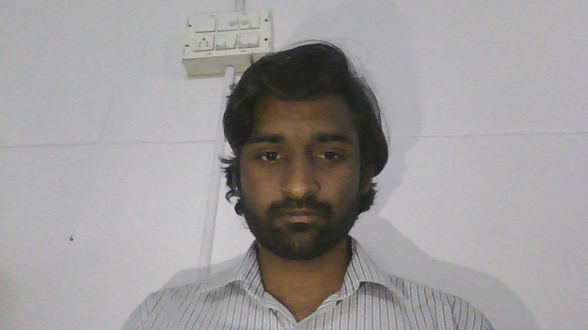

graphic designer
hi i'm polisetti Durga sasidhar font-end developer
I am a passionate front-end developer with a strong background in creating responsive and visually appealing websites. With a Bachelor's degree in Computer Science and experience working with modern web technologies, I specialize in crafting seamless user experiences and efficient code.
